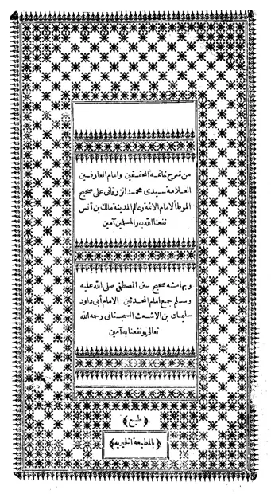

موطأ مالك
Al-Muwaththa' Imam Malik
Baca Al-Muwaththa' Imam Malik (موطأ مالك) karya Imam Malik secara gratis di Maktabah Ilmu: teks Arab, Indonesia, Inggris. Tanpa daftar, tanpa iklan.
Buka kitab iniLihat lemari ilmuDaftar isi
- The Times of Prayer
- Purity
- Prayer
- Forgetfulness in Prayer
- Jumu'a
- Prayer in Ramadan
- Tahajjud
- Prayer in Congregation
- Shortening the Prayer
- The Two 'Ids
- The Fear Prayer
- The Eclipse Prayer
- Asking for Rain
- The Qibla
- The Qur'an
- Burials
- Zakat
- Fasting
- I'tikaf in Ramadan
- Hajj
- Jihad
- Vows and Oaths
- Sacrificial Animals
- Slaughtering Animals
- Game
- The 'Aqiqa
- Fara'id
- Marriage
- Divorce
- Suckling
- Business Transactions
- Qirad
- Sharecropping
- Renting Land
- Pre-emption in Property
- Judgements
- Wills and Testaments
- Setting Free and Wala'
- The Mukatab
- The Mudabbar
- Hudud
- Drinks
- Blood-Money
- The Oath of Qasama
- Madina
- The Decree
- Good Character
- Dress
- The Description of the Prophet, may Allah Bless Him and Grant Him Peace
- The Evil Eye
- Hair
- Visions
- Greetings
- General Subjects
- The Oath of Allegiance
- Speech
- Jahannam
- Sadaqa
- Knowledge
- The Supplication of the Unjustly Wronged
… dan 1 bab lainnya.